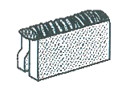
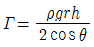
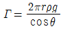
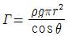
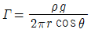

침투비파괴검사기사 (2017-03-05 기출문제)
1과목: 비파괴검사 개론
1. 셀레늄(Selenium) 등의 반도체 뒤에 금속판을 대고 균일한 전하를 준 후 시험체를 투과한 방사선에 노출되면 방사선의 강도에 따라 반도체의 저항이 작아지고 전하가 이동하여 방전하게 되는데, 여기에 반대 전하를 도포하면 육안으로 확인 가능한 영상이 형성되며, 이에 적절한 수지를 도포함으로써 영상을 형성할 수 있다. 이 원리를 이용하는 방법을 무엇이라고 하는가?
- 건식 방사선 투과검사법(Xeroradiography)
- 전자 방사선 투과검사법(Electronradiography)
- 자동 방사선 투과검사법(Autoradiography)
- 순간 방사선 투과검사법(Flash radiography)
(정답률: 51%)

2. 부품의 체적검사에 적용되는 비파괴검사의 물리적 현상은?
- 전자파, 열
- 방사선, 초음파
- 전자파, 음파
- 침투액, 미립자
(정답률: 69%)
3. 침투탐상검사에서 침투액의 점성(Viscosity)은 침투액의 어떠한 성능에 가장 큰 영향을 미치는가?
- 침투력
- 세척성
- 형광성
- 침투속도
(정답률: 81%)
4. 압력용기 내에 있는 이상기체에 2배의 압력을 가하면, 이 이상기체의 부피는 몇 배가 되는가? (단, 온도는 일정하다.)
- 1/2
- 1
- 2
- 4
(정답률: 75%)
5. 결함의 형상을 육안으로 확인할 수 있어 해석이 용이한 비파괴검사법만으로 조합된 것은?
- 방사선투과검사, 자분탐상검사
- 초음파탐상검사, 침투탐상검사
- 와전류탐상검사, 자분탐상검사
- 와전류탐상검사, 침투탐상검사
(정답률: 59%)
6. 특정온도의 3원계 금속 상태도에서 3상으로 공존할 때의 자유도는 얼마인가? (단, 압력은 일정하다.)
- 0
- 1
- 2
- 3
(정답률: 75%)
7. 시효경화성이 있으며, Cu 합금 중에서 경도 및 강도가 가장 큰 합금계는?
- Cu – Ag 계
- Cu – Pt 계
- Cu – Be 계
- Cu – Zn 계
(정답률: 48%)
8. 주철에서 흑연의 구상화 원소가 아닌 것은?
- Mg
- Ce
- Ca
- Sn
(정답률: 44%)
9. 46% Ni-Fe 합금으로 초기에는 Pt를 대용하는 전구 봉입선으로 사용하였으나 Dumet 선이 개발되어 전자관, 전구, 방전램프 등 연질유리의 봉입부에 사용하는 것은?
- 라우탈(Lautal)
- 퍼말로이(Permalloy)
- 콘스탄탄(Constantan)
- 플래티나이트(Platinite)
(정답률: 60%)
10. 정적 하중으로 파괴를 일으키는 응력보다 훨씬 낮은 응력으로도 반복하여 하중을 가하게 되면 파괴되는 현상은?
- 마모(wear)
- 피로(fatigue)
- 크리프(creep)
- 취성파괴(brittle fracture)
(정답률: 87%)
11. 실루민을 Na 혹은 NaF로 개량처리하는 주된 목적은?
- 공정점 부근 조성의 Si 결정을 미세화하기 위하여
- 공석점 부근 조성의 Si 결정을 미세화하기 위하여
- 공정점 부근 조성의 Fe 결정을 미세화하기 위하여
- 공석점 부근 조성의 Fe 결정을 미세화하기 위하여
(정답률: 63%)
12. 분말야금의 특징을 옳게 설명한 것은?
- 절삭공정을 생략할 수 있다.
- 다공질 재료를 제조할 수 없다.
- 재료를 융해하여야만 제조가 가능하다.
- Fe계 제품의 금속표면층을 침탄으로 경화시킬 수 없다.
(정답률: 73%)
13. 순철의 변태에 관한 설명 중 틀린 것은?
- 동소변태는 A3와 A4 변태가 있다.
- Ar은 냉각변태, Ac는 가열변태를 의미한다.
- A2 변태점을 시멘타이트의 자기변태점이라 한다.
- 자기변태는 자기적 서지링 변화하는 변태이다.
(정답률: 67%)
14. 황동 가공재를 상온에서 방치할 경우 시간의 경과에 따라 가공에 의한 불균일 변형(strain)이 균등화되어 경도 등 여러 서지링 악화하는 현상은?
- 패턴팅
- 용체화
- 가공경화
- 경년변화
(정답률: 70%)
15. 형상기억효과나 초탄성 현상을 나타내는 합금이 아닌 것은?
- N-Ti
- Cu-Al-Ni
- Cu-Zn-Al
- Al-Cu-Si
(정답률: 43%)
16. 피복 아크 용접에서 아크쏠림을 방지하기 위한 조치 사항으로 틀린 것은?
- 직류(DC)용접기 대신 교류(AC)용접기를 사용한다.
- 접지점을 될 수 있는 대로 용접부에서 멀리한다.
- 피복제가 모재에 접촉할 정도로 짧은 아크를 사용한다.
- 용접봉 끝을 아크 쏠림 동일방향으로 기울인다.
(정답률: 55%)
17. 피복 아크 용접 작업에서 아크 발생을 4분, 아크 정지를 6분 하였다면 용접기 사용률은?
- 20%
- 30%
- 40%
- 60%
(정답률: 78%)
18. 다음 그림과 같은 용접이음의 명칭으로 옳은 것은?

- 겹치기 이음
- 변두리 이음
- 맞대기 이음
- 측면 필릿 이음
(정답률: 56%)
19. 일반적인 용접의 특징으로 틀린 것은?
- 재료가 절약되고 중량이 가벼워진다.
- 기밀성, 수밀성이 우수하며 이음 효율이 높다.
- 재질의 변형이나 잔류응력이 발생하지 않는다.
- 소음이 적어 실내 작업이 가능하고 복잡한 구조물 제작이 쉽다.
(정답률: 75%)
20. 용접 후 용접변형에 대한 교정방법이 아닌 것은?
- 전진법
- 롤러에 의한 법
- 가열 후 해머질하는 법
- 얇은 판에 대한 점 수축법
(정답률: 57%)
2과목: 침투탐상검사 원리
21. 침투탐상시험 시 세락믹의 기공에 의한 불연속지시는 금속의 기공에 의한 불연속 지시와 비교하여 어떻게 나타나겠는가? (단, 다른 검사 조건은 모두 동일하다.)
- 금속의 기공에 의한 지시보다 더욱 선명하게 나타난다.
- 재료에 무관하게 금속의 기공에 의한 지시와 거의 동일하게 나타난다.
- 금속의 기공에 의한 지시보다 훨씬 흐리게 나타난다.
- 균열의 지시모양처럼 선형으로 예리하게 나타난다.
(정답률: 53%)
22. 침투탐상시험에서 모세관 현상의 표면장력 단위로 옳은 것은?
- N/m
- N/m2
- J/m2
- μW/cm2
(정답률: 58%)
23. 다음 중 자외선 조사등의 점검에 대한 설명이 잘못된 것은?
- 기름, 먼지 등에 의한 수은등 전구의 오염 점검
- 필터의 청결함에 대한 점검
- 자외선조사등의 강도에 대한 점검
- 자외선조사등의 파장에 대한 점검
(정답률: 44%)
24. 침투탐상시험에 사용되는 자외선조사장치 수은등의 유효수명의 대한 설명으로 옳은 것은?
- 초기광량의 약 5% 정도 빛이 감소하는 시점까지의 시간
- 초기광량의 약 10% 정도 빛이 감소하는 시점까지의 시간
- 초기광량의 약 20% 정도 빛이 감소하는 시점까지의 시간
- 초기광량의 약 50% 정도 빛이 감소하는 시점까지의 시간
(정답률: 44%)
25. 침투탐상시험에서 침투시간을 길게 주어야 할 경우로서 올바른 것은?
- 점도가 낮고, 온도가 높을 때
- 표면장력이 크고, 모세관 현상이 클 때
- 접촉각이 크고, 적심성이 적을 때
- 접촉각이 작고, 적심성이 클 때
(정답률: 67%)
26. 침투탐상검사에서 침투제의 물리적인 특성 중 점성의 성질을 바르게 설명한 것은?
- 침투제의 세척성 정도
- 발산되는 형광휘도
- 오염물질의 수용성 정도
- 침투속도와의 관계 정도
(정답률: 83%)
27. 작고 정교한 부품을 침투탐상시험할 때 가장 효과적인 세척 방법은?
- 증기 탈지
- 산 세척
- 알칼리 세척
- 초음파 세척
(정답률: 69%)
28. 다음 침투탐상시험에 사용하는 현상제 중 검출감도 가장 높은 것은?
- 건식현상제
- 속건식현상제
- 수현탁용습식현상제
- 수용성습식현상제
(정답률: 61%)
29. 침투탐상시험에서 후처리 시, 현상제의 제거를 위해 일반적으로 사용하는 방법이 아닌 것은?
- 솔질 세척
- 전열 세척
- 공기분사 세척
- 수 세척
(정답률: 55%)
30. 기름베이스 유화제의 피로시험 항목이 아닌 것은?
- 수세성
- 감도
- 수분 함유량
- 점도
(정답률: 39%)
31. 유화제의 기능을 옳게 설명한 것은?
- 허위지시를 없애 준다.
- 현상제의 흡출작용을 돕는다.
- 미세한 불연속으로 침투하는 작용을 증가시킨다.
- 침투액과 결합하여 물 세척이 가능하도록 반응한다.
(정답률: 63%)
32. 침투액의 감도 레벨을 몇 단계로 나누어 제조하는 침투액은?
- 용제제거성 염색침투액
- 용제제거성 형광침투액
- 후유화성 형광침투액
- 수세성 형광침투액
(정답률: 27%)
33. 액체 침투탐상시험에서 탐상제의 성능 점검 및 조작방법의 적합여부를 알아보기 위해 사용하는 대비시험편의 사용목적으로 옳지 않은 것은?
- 조작방법이나 조작조건의 적합여부
- 탐상제 제작 시 제품의 품질관리
- 검사원의 교육 및 훈련
- 다른 탐상조건에서 탐상제의 품질과 성능의 비교시험 및 유지관리
(정답률: 38%)
34. 침투탐상시험법으로 유리의 미세균열을 탐상하고자 할 때 가장 효과적인 방법은?
- 후유화성 염색 침투탐상법
- 후유화성 형광 침투탐상법
- 대전입자(electrifiedparticle) 탐상법
- 여과입자(filteredparticle) 탐상법
(정답률: 56%)
35. 액체침투탐상검사 시 다음 표면 조건 중 검사의 질을 저하시키는 조건과 가장 거리가 먼 것은?
- 젖은 표면
- 거친 표면
- 기름을 바른 표면
- 매끄러운 표면
(정답률: 75%)
36. 현상시간에 따른 지시모양의 변화가 큰 시험법은?
- 습식현상법, 무현상법
- 건식현상법, 무현상법
- 습식현상법, 속건식현상법
- 속건식현상법, 무현상법
(정답률: 55%)
37. 액체침투탐상시험에 적용되는 현상제 중 벤토나이트, 활성 백토 등에 습윤제, 계면활성제, 소포제 등을 첨가하여 사용하는 현상제는?
- 건식 현상제
- 무현상
- 습식 현상제
- 속건식 현상제
(정답률: 34%)
38. 두께가 45mm, 직경이 10m인 구형 탱크 제작 시 외부에서 용접한 다음, X형 흠 내부에서 가우징(Gouging) 후 용접하려고 한다. 가우징 부위의 검사방법으로 가장 적절한 것은?
- 방사선투과검사
- 초음파탐상검사
- 자분탐상검사
- 액체침투탐상검사
(정답률: 56%)
39. 액면과 관의 접촉각을 θ, 표면장력을 γ라 할 때, 표면장력을 구하는 식으로 옳은 것은? (단, ρ : 액체의 밀도, r : 관의 반지름, h : 액 기둥의 높이, g : 중력가속도이다.)




(정답률: 44%)
40. 후유화제법에서 가장 중요하게 다루어야 할 작업시간은?
- 전처리시간
- 현상시간
- 유화시간
- 건조시간
(정답률: 80%)
3과목: 침투탐상검사 시험
41. 판매할 제품에 대한 침투지시모양의 기록 방법으로 옳지 않은 것은?
- 전사
- 사진
- 각인
- 스케치
(정답률: 63%)
42. A형 표준시험편을 사용할 때에 주의하지 않아도 되는 것은?
- 실제 탐상 시와 동일한 조건의 환경을 맞추어야 한다.
- 재사용 시에는 반드시 에칭(Etching)을 하여야 한다.
- 중간의 홈을 기준으로 비교대상 물질을 적용하여야 한다.
- 성능에 의심이 갈때마다 적용하여 점검해야 한다.
(정답률: 62%)
43. 주조품 시험체 표면의 산화물을 제거하기 위한 가장 효과적인 전처리 방법은?
- 산 세척
- 초음파 세척
- 고압용수 세척
- 와이어 브러싱
(정답률: 51%)
44. 후유화성 침투탐상검사에서 유화제의 조건으로 옳지 않은 것은?
- 침투액과 서로 섞이지 않는 성질이 있어야 한다.
- 소량의 수분이 혼입되어도 열화되지 않아야 한다.
- 중성으로 부식성이 없어야 한다.
- 인화점이 높아야 한다.
(정답률: 52%)
45. 침투제와 유화제의 비중 측정에 사용되는 계측기는?
- Hydrometer
- Viscometer
- U.V.meter
- Photoflyorometer
(정답률: 47%)
46. 초음파 세척 방법은 물과 비누 또는 솔벤트를 용제로 사용한다. 다음 중 어떤 것을 세척하는데 가장 효과적인가?
- 큰 부품의 표면 세척
- 압력용기의 내면 세척
- 작은 부품의 다량 세척
- 20m 길이의 용접부위 세척
(정답률: 54%)
47. 단조품에 대하여 침투탐상검사를 수행했을 때 나타날 수 있는 결함이 아닌 것은?
- 터짐(Burst)
- 백점(Flake)
- 탕계(Cold shut)
- 겹침(Lap)
(정답률: 48%)
48. 침퉤의 형광성능을 평가할 경우 통상적으로 나타나는 결과치는 무엇을 의미하는가?
- 지시에서 발산되는 실제 빛의 양
- 재료를 형광화하는 데 소요되는 자외선의 양
- 다른 침투제와 비교할 때 형광물질에서 발산되는 빛의 상대량
- 주위에서 발산되는 빛과 비교할 때 형광 물질에서 발산되는 빛의 상대량
(정답률: 35%)
49. 다음 탐상제의 오염형태 중 탐상결과에 가장 적은 영향을 미치는 오염은?
- 수세성 침투액의 물의 오염
- 습식현상제의 물의 오염
- 형광침투제의 산(Acid)의 오염
- 물베이스 유화제의 물의 오염
(정답률: 54%)
50. 다음 중 침투탐상검사에 사용되는 건조장치로서 가장 바람직한 것은?
- 전열식 건조기
- 열풍식 건조기
- 백열등식 건조기
- 적외선식 건조기
(정답률: 82%)
51. 주로 소형 대량부품 및 주조품과 같이 표면이 거칠거나 형상이 복잡한 것에 적용하기 가장 좋은 침투탐상검사로 야외에서보다는 공장에서 효과적임 침투탐상검사는 어떤 검사법인가?
- 수세성 형광침투탐상검사
- 용제 제거성 염색침투탐상검사
- 후유화성 형광침투탐상검사
- 후유화성 염색침투탐상검사
(정답률: 70%)
52. 침투탐사검사 시 미세한 터짐이나 폭이 넓고 얕은 터짐에서 가장 검출 성능이 우수한 시험방법은?
- 수세성 형광침투탐상검사
- 수세성 염색침투탐상검사
- 후유화성 형광침투탐상검사
- 용제제거성 형광침투탐상검사
(정답률: 73%)
53. 자외선조사장치에 대한 설명으로 옳은 것은?
- 자외선조사등의 강도는 Lux 단위를 사용한다.
- 전원의 점등 횟수는 전등 사용수명과는 무관하다.
- 주로 많이 사용되는 자외선조사등으로는 수은증기램프기 있다.
- 사용되는 자외선의 파장은 320~420Å 범위 내의 것이 사용된다.
(정답률: 51%)
54. 전처리방법 중 열간탱크 알칼리세척법을 수정한 방법으로서 대형의 부피가 큰 시험체에 사용되며 깊은 결함의 밑바닥까지는 도달하여 세척할 수 없어서 후속 용제세척이 추천되는 방법은?
- 증기 탈지
- 세제 세척
- 증기 세척
- 기계적 세척
(정답률: 66%)
55. 침투탐상검사에 사용되는 탐상제의 품질과 성능 유지에 사용되는 B형 대비시험편에 대한 설명 중 옳은 것은?
- 모재는 청동 재질이다.
- 크롬도금 후 니켈도금 한다.
- 균열의 최대 깊이는 모재와 도금층 두께의 합이다.
- PT-B20형의 도금균열 폭의 목표값은 1.0μm 이다.
(정답률: 55%)
56. 자외선등의 선원용 램프로 볼 수 없는 것은?
- 백열등
- 밀폐수은증기램프
- 금속 또는 탄소아크
- 손전등
(정답률: 55%)
57. 침투탐상검사에서 침투능력에 대한 설명으로 잘못된 것은?
- 시험체의 온도가 낮을수록 침투시간이 길어진다.
- 결함의 종류에 따라 침투능력이 다르다.
- 전처리 시 사용된 세척액은 결함 내에 남아 있어야 침투액과 혼합되어 성능이 좋아진다.
- 전처리 시 오염 등이 제거되어야 침투액의 성능이 높아질 수 있다.
(정답률: 80%)
58. 수용성 현상제에 대한 설명으로 틀린 것은?
- 건조시키면 시험체의 표면에 매우 얇은 현상막을 형성한다.
- 검사 후 현상제의 제거가 간단하다.
- 시험면이 백색이 아니라도 적용 가능한 방법이다.
- 주로 형광침투액과 조합하여 사용하는 경우가 많다.
(정답률: 33%)
59. 용접부를 침투탐상검사할 때 직경 2mm 정도 되는 동그란 원형지시가 나타났다. 검출된 지시의 예상되는 불연속의 종류는?
- 표면기공(Porosity)
- 개재물(Inclusion)
- 터짐(Burst)
- 언더컷(Undercut)
(정답률: 77%)
60. 유화시간에 대한 설명으로 옳은 것은?
- 유화제를 적용해서 세척처리까지의 시간
- 유화제를 적용해서 건조처리까지의 시간
- 유화제를 적용해서 현상처리까지의 시간
- 유화제를 적용해서 관찰까지의 시간
(정답률: 48%)
4과목: 침투탐상검사 규격
61. 보일러 및 압력용기에 대한 침투탐상검사(ASME Sec.V Art.6)에 의하면 용제 제거성 침투액 제거시 가장 적당한 세척 방법은?
- 헝겊으로 닦는다.
- 용제를 흘려 준다.
- 물로 닦는다.
- 용제를 묻힌 헝겊으로 문지른다.
(정답률: 69%)
62. 침투탐상 시험방법 및 침투지시모양의 분류(KS B 0816)에 의한 침투탐상시험에 대한 설명으로 잘못된 것은?
- 사용하지 않는 탐상제는 용기에 밀폐하여 냉암소에 보관한다.
- 습식 및 속건식 현상제는 소정의 분산 상태를 유지해야 한다.
- 암실의 침투지시모양을 관찰하는 장소는 50 lx 이하 이어야 한다.
- 자외선 조사장치는 파장이 320~400nm인 자외선을 얻을 수 있어야 한다.
(정답률: 74%)
63. 보일러 및 압력용기에 대한 표준침투탐상검사(ASME Sec.V Are.24 SE-165)에서 강 용접부의 균열 혹은 융합불량을 탐상하기 위하여 권고되는 최소 침투시간은 얼마인가?
- 5분
- 10분
- 15분
- 30분
(정답률: 66%)
64. 보일러 및 압력용기에 대한 침투탐상검사(ASME Sec.V Art.6)에 따른 규정된 표준 온도 범위로 옳은 것은?
- 0~20℃
- 5~52℃
- 25~60℃
- 40~125℃
(정답률: 72%)
65. 보일러 및 압력용기에 대한 침투탐상검사(ASME Sec.V Art.6)에 따른 침투탐상검사 절차에 관한 내용으로 옳은 것은?
- 형광침투제를 적용한 경우에는 건식현상제만 사용해야 한다.
- 염색침투제를 적용한 경우에는 건식현상제만 사용해야 한다.
- 불연속 지시를 가릴 우려가 있는 불균일한 표면은 연삭, 기계가공 또는 기타 방법으로 표면처리를 할 수 있다.
- 전처리는 시험할 표면 및 그 표면에 이웃하여 최소한 10mm 내의 범위를 한다.
(정답률: 55%)
66. 보일러 및 압력용기에 대한 침투탐상검사(ASME Sec.V Art.6)에 따라 시험편을 가열 후 찬물에 급랭시킨 뒤 다시 시험편을 약 149℃로 가열 건조 시키는데 이를 °F로 환산했을 때 가장 알맞은 값은?
- 250 °F
- 275 °F
- 300 °F
- 321 °F
(정답률: 44%)
67. 침투탐상 시험방법 및 침투지시모양의 분류(KS B 0816)에 따른 탐상시험에서 여러 개의 지시모양이 거의 동일 직선상에 존재하고 그 상호거리가 얼마 이상일 경우 연속침투지시모양이라 하는가?
- 2mm
- 4mm
- 5mm
- 10mm
(정답률: 68%)
68. 침투탐상 시험방법 및 침투지시모양의 분류(KS B 0816)에서 탐상 후 '시험기록'에는 탐상제에 대해 적도록 규정하고 있다. 다음 중 기록에 포함할 내용이 아닌 것은?
- 침투액의 명칭
- 현상제를 점검했을 때 그 방법
- 유화제를 점검했을 때 그 결과
- 탐상제의 사진 또는 스케치한 내용
(정답률: 54%)
69. 보일러 및 압력용기에 대한 침투탐상검사(ASME Sec.V Art.6)에 따르면, 수세성 침투액을 사용하였을 때 물로 잉여 침투액을 제거하는데, 이때 수압은 최대 얼마를 초과하지 않아야 하는가?
- 75 kPa
- 160 kPa
- 350 kPa
- 600 kPa
(정답률: 73%)
70. 침투탐상 시험방법 및 침투지시모양의 분류(KS B 0816)의 B형 대비시험편에 대한 설명으로 틀린 것은?
- 시험편은 도금의 두께에 따라 4종류로 나눈다.
- 시험편의 재료는 A2024P로 한다.
- 탐상제의 성능 및 조작방법의 적합여부를 조사하는데 사용한다.
- 도금은 시험편 재료에 니켈도금을 한 후 다시 크롬 도금을 한다.
(정답률: 64%)
71. 침투탐상 시험방법 및 침투지시모양의 분류(KS B 0816)에서 기호 E는 어떤 현상 방법인가?
- 건식현상제를 사용하는 방법
- 속건식현상제를 사용하는 방법
- 특수한 현상제를 사용하는 방법
- 습식현상제를 사용하는 방법
(정답률: 73%)
72. 침투탐상 시험방법 및 침투지시모양의 분류(KS B 0816)에 따른 탐상에서 결함을 기록할 때 다음 중 기록에 포함하지 않아도 되는 것은?
- 결함 길이
- 결함 면적
- 결함의 종류
- 결함의 위치
(정답률: 68%)
73. 보일러 및 압력용기에 대한 침투탐상검사(ASME Sec.V Art.6)에서 침투제의 적용방법에 해당되지 않는 것은?
- 침지
- 솔질
- 분무
- 흘림
(정답률: 51%)
74. 침투탐상 시험방법 및 침투지시모양의 분류(KS B 0816)에서 규정한 표준 침투시간이 5분이 아닌 시험체의 형태는?
- 동 용접부
- 마그네슘 압출품
- 알루미늄 주조품
- 티타늄 용접부
(정답률: 57%)
75. 침투탐상 시험방법 및 침투지시모양의 분류(KS B 0816)에서 자외선조사장치는 필터 또는 관구의 앞면에서 38cm되는 거리에서 자외선 강도가 얼마 이상이어야 하는가?
- 300 μW/cm2
- 500 μW/cm2
- 800 μW/cm2
- 1000 μW/cm2
(정답률: 76%)
76. ASME SEC.VⅢ App.8에 따라 침투탐상하였을 때 침투지시의 평가방법으로 틀린 것은?
- 0.8mm(1/32인치)보다 큰 지시는 관련지시로 간주한다.
- 길이가 너비의 3배를 초과하는 지시는 선형지시이다.
- 길이가 너비의 3배 이하인 지시는 원형지시이다.
- 의심스러운 지시의 확인을 위해 재시험한다.
(정답률: 51%)
77. 보일러 및 압력용기에 대한 침투탐상검사(ASME Sec.V Art.6)에 규정된 유화처리 후의 혼합물 제거 방법은?
- 담금(Immersing) 또는 붓기(Flooding)
- 담금(Immersing) 또는 분무(Spraying)
- 담금(Immersing) 또는 씻기(Rinsing)
- 담금(Immersing) 또는 솔질(Brushing)
(정답률: 35%)
78. 침투탐상 시험방법 및 침투지시모양의 분류(KS B 0816)에 의한 유화처리에 관한 내용으로 틀린 것은?
- 침지, 붓기, 분무 등의 방법으로 적용한다.
- 기름베이스 유화제일 때 형광침투액의 유화시간은 3분 이내로 한다.
- 물베이스 유화제일 때 염색침투액의 유화시간은 2분 이내로 한다.
- 유화처리는 시험품의 표면에 부착되어 있는 여분의 침투액을 물로 세척하는 조작이다.
(정답률: 57%)
79. 침투탐상 시험방법 및 침투지시모양의 분류(KS B 0816)에 따른 후유화성 형광 침투탐상시험에서 별도의 규정이 없을 때 세척처리를 위한 수온의 범위로 옳은 것은?
- 3~15℃
- 10~40℃
- 20~50℃
- 25~60℃
(정답률: 67%)
80. 보일러 및 압력용기에 대한 표준침투탐상검사(ASME Sec.V Are.24 SE-165)에서 사용되는 용제 세척제의 성분 함량을 제한하는 원소는?
- 수소(H)
- 붕소(B)
- 탄소(C)
- 염소(Cl)
(정답률: 68%)